كتالوج التنبيهات الأمنية الذكية VEXORA AI
عرض تفصيلي شامل لكافة التنبيهات الـ 32 المتاحة بكتالوج المنظومة مجهزة بلقطات شاشة توضيحية عالية الدقة للمشروعات والعملاء.
⚡ 32 تنبيهاً أمنياً ذكياً
• 5 فئات رئيسية
• دقة رصد لحظية
السلامة والصحة المهنية 👷♂️ (11 تنبيهات)

خوذة السلامة (Helmet Detection)
رصد عدم ارتداء خوذة الرأس بالمواقع الإنشائية وتنبيه المشرف فورياً لحماية الأرواح.

السترة الواقية (Vest Detection)
التحقق من ارتداء السترة الفسفورية المضيئة في بيئات العمل ذات الرؤية المنخفضة.
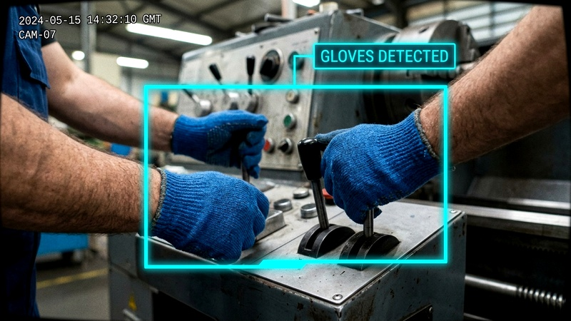
قفازات العمل (Gloves Detection)
رصد الالتزام بقفازات العمل المخصصة أو القفازات الطبية بالمصانع والمختبرات.

نظارات الحماية (Goggles Detection)
التأكد من ارتداء نظارات حماية العين أثناء عمليات القطع واللحام والمواد الكيميائية.

حذاء الأمان (Safety Shoes)
رصد التزام العمال بارتداء أحذية الأمان المقاومة للانزلاق والصدمات.

الكمامات الوقائية (Mask Detection)
التأكد من ارتداء الكمامات بالقطاعات الصحية والمستشفيات ومصانع الأغذية.

غطاء الشعر (Hairnet Compliance)
رصد الالتزام بتغطية الشعر في خطوط إنتاج الأغذية والمطابخ والمختبرات.

الزي الموحد (Uniform Compliance)
التأكد من التزام طاقم العمل بالزي الرسمي والتنفيذي المعتمد للشركة.
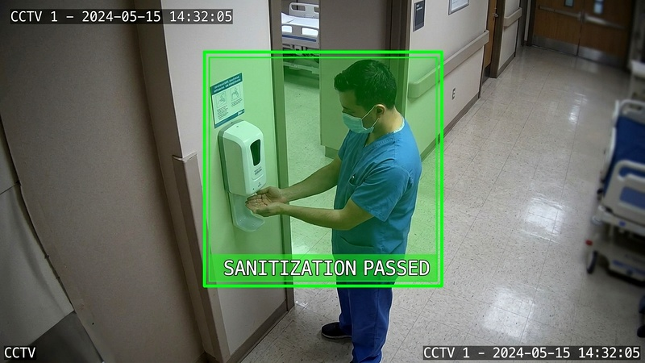
النظافة والتعقيم (Hygiene & Sterilization)
كشف تخطي أجهزة تعقيم الأيدي قبل الدخول للغرف المعقمة والعمليات.
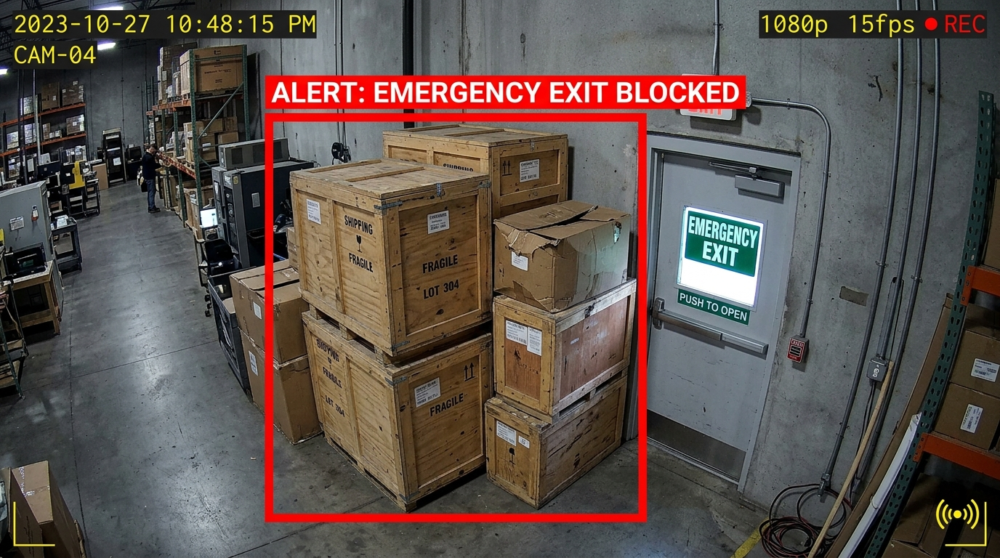
انسداد ممرات الطوارئ (Emergency Exit Blocked)
جديد 🔥
رصد تخزين المعدات أو وضع العوائق أمام أبواب وممرات الإخلاء والطوارئ.
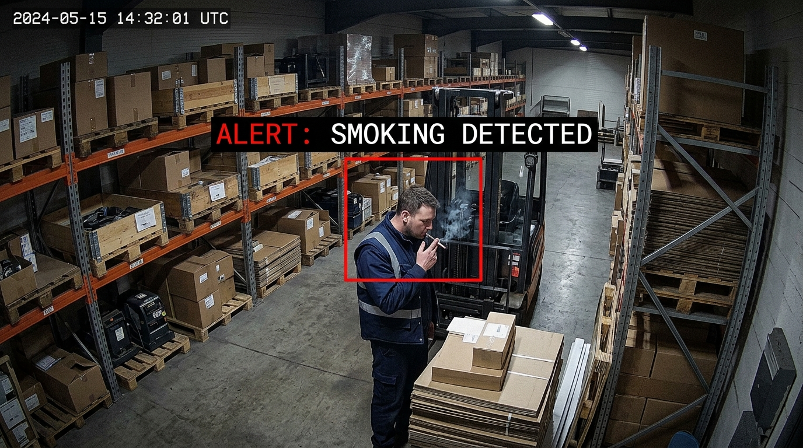
رصد التدخين (Smoking Violation)
جديد 🔥
اكتشاف السجائر وشعلة النار بالمستودعات والمناطق المحظورة قابلية الاشتعال.
الأمن وحماية المحيط 🔒 (7 تنبيهات)
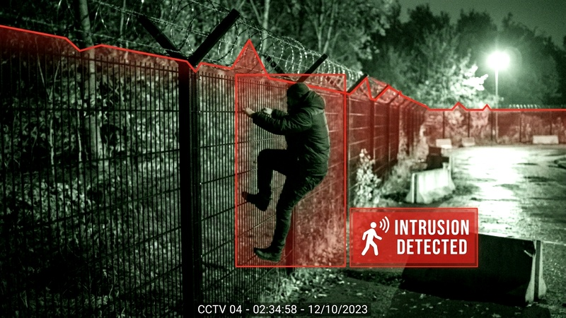
تسلل الأسوار (Perimeter Intrusion)
رصد تسلق الأسوار وااختراق الحدود الخارجية للمنشأة في أوقات الحظر.
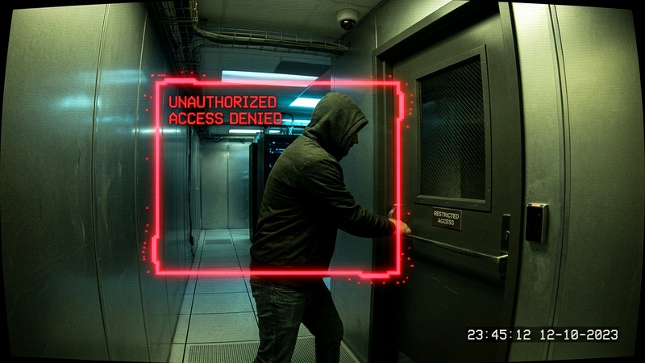
دخول غير مصرح (Unauthorized Entry)
كشف دخول الأفراد لغرف الأرشيف، السيرفرات، وخزائن المواد الحساسة.
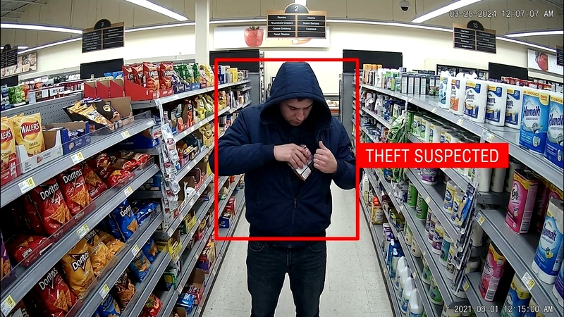
حركات السرقة (Theft Detection)
رصد التقاط الأشياء المريب وإخفاء المنتجات في المتاجر والمستودعات.
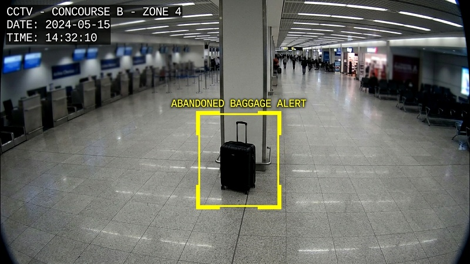
أجسام متروكة (Abandoned Baggage)
رصد الحقائب والأجسام المتروكة لفترات طويلة في الأماكن العامة والمطارات.

تسكع مريب (Loitering Detection)
كشف وقوف أفراد لفترات مريبة وحركات غير مبررة حول محيط المنشأة.

تخريب الممتلكات (Property Vandalism)
رصد محاولات التخريب، رش الجدران، والعبث بالأسوار والأبواب الخارجية.
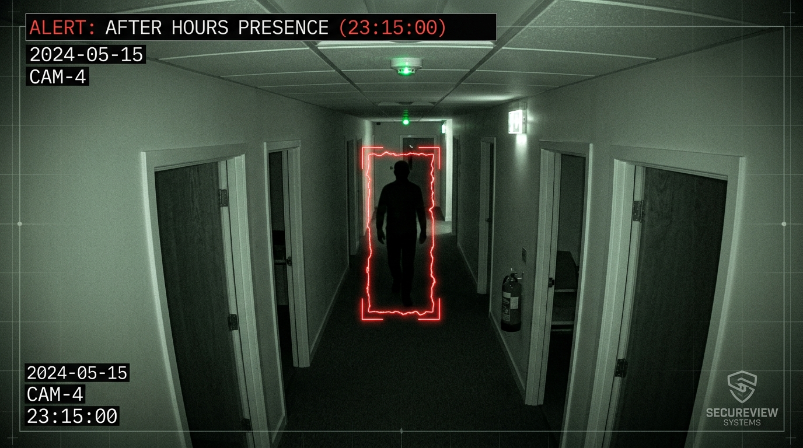
التواجد بعد الدوام (Presence After Hours)
جديد 🔥
رصد التواجد البشري ليلاً في المكاتب والمباني بعد إغلاق ساعات العمل الرسمية.
السلامة العامة وإدارة الحشود 👨👧👦 (5 تنبيهات)

التكدس والازدحام (Crowd Density)
رصد التجمعات الكبيرة والتدافع عند البوابات والممرات وإرسال تحذيرات الإخلاء.

المشاجرات والعنف (Violence & Brawls)
كشف الشغب والعنف الجسدي والاشتباكات بالصوت والصورة بشكل لحظي.

الركض السريع (Fast Running)
رصد الركض المريب في الممرات الداخلية للمدارس، المستشفيات، والمباني.

التكدس المروري (Vehicle Traffic)
كشف التكدس المفاجئ للسيارات أو التوقفات المعطلة لحركة السير داخل المجمعات.
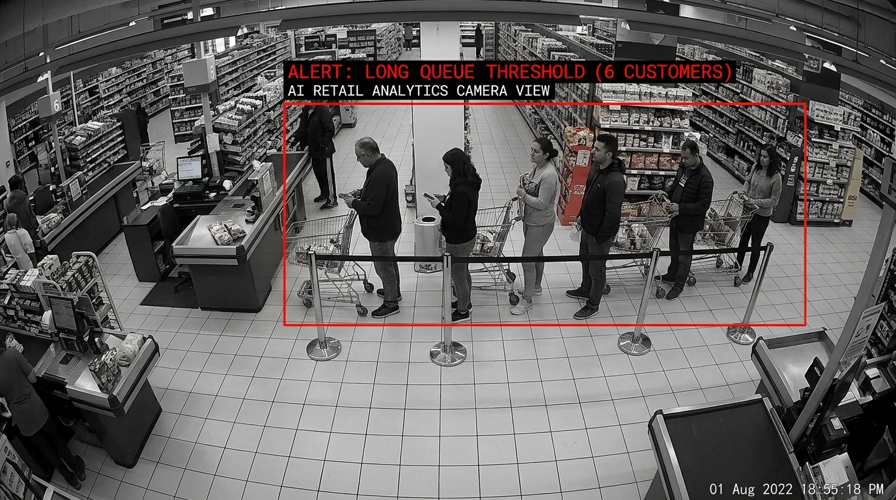
طوابير الكاشير الطويلة (Long Queue)
جديد 🔥
التنبيه عند زيادة طابور المحاسبة والخدمة عن 5 أشخاص لفتح مسار خدمة جديد.
مراقبة الحوادث والبيئة ⚠️ (4 تنبيهات)

الأدخنة والحرائق (Fire & Smoke)
الإنذار المبكر بمجرد ظهور ألسنة لهب أو أدخنة قبل وصولها للمستشعرات العادية.
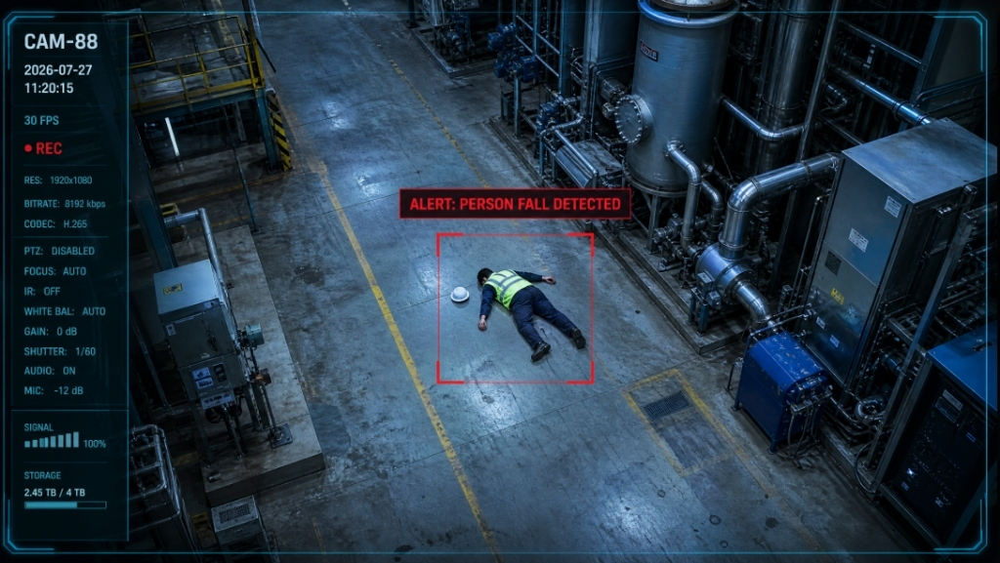
السقوط المفاجئ (Human Fall)
رصد سقوط المرضى أو العمال على الأرض وإطلاق نداء استغاثة فورية للطوارئ.
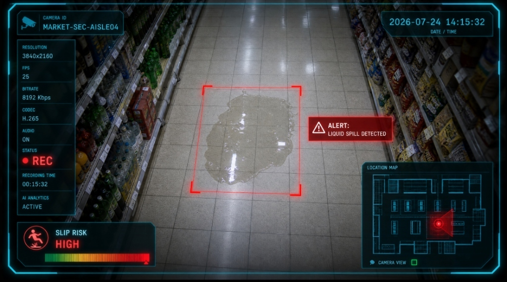
انسكاب السوائل (Liquid Spill)
كشف انسكاب السوائل والمواد الخطرة على الأرضيات لمنع انزلاق الأفراد والمصانع.
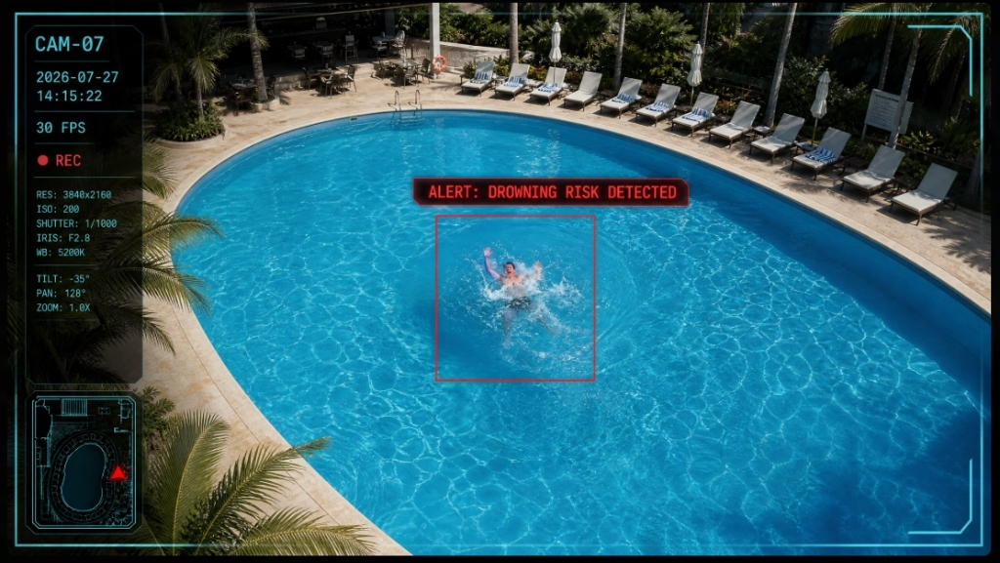
خطر الغرق بالمسابح (Pool Drowning)
رصد الأمان وحالات الغرق وعدم الحركة في المسابح والمنتجعات السياحية.
مراقبة العمليات والسلوكيات ⚙️ (5 تنبيهات)

تناول طعام بالمناطق (Prohibited Eating)
رصد تناول الأطعمة والمشروبات في غير الأماكن المخصصة مثل خطوط الإنتاج المعقمة.
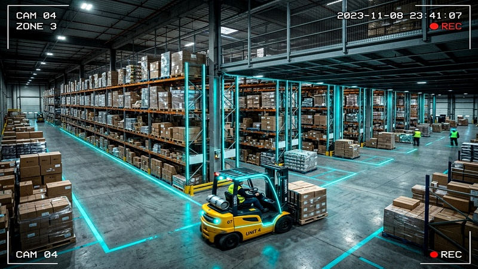
الرافعات الشوكية (Forklift Proximity)
إنذار مبكر عند اقتراب الرافعات الشوكية بشكل خطر من مسارات المشاة والعمال.
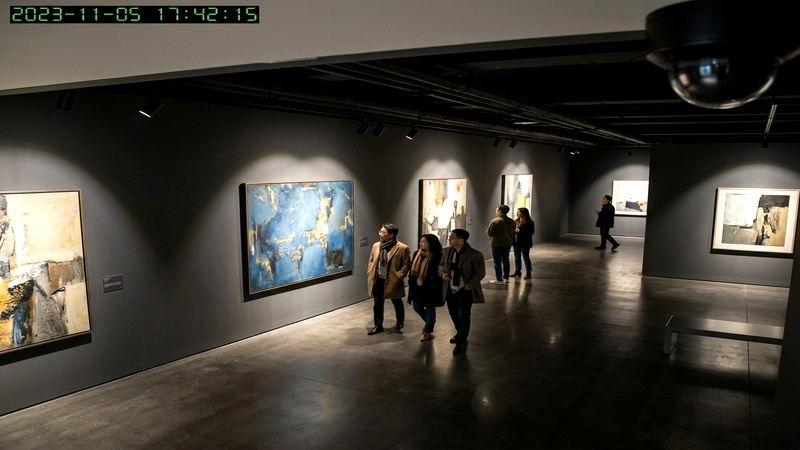
لمس المعروضات (Artifact Touching)
رصد الاقتراب الشديد أو اللمس للتحف والمعروضات الحساسة بالمعارض والمتاحف.
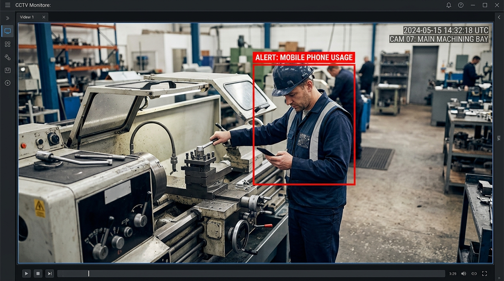
استخدام الهاتف المحمول (Mobile Phone Usage)
جديد 🔥
كشف انشغال العمالة بالجوال أثناء تشغيل الآلات الخطرة أو مواقع الانتباه.
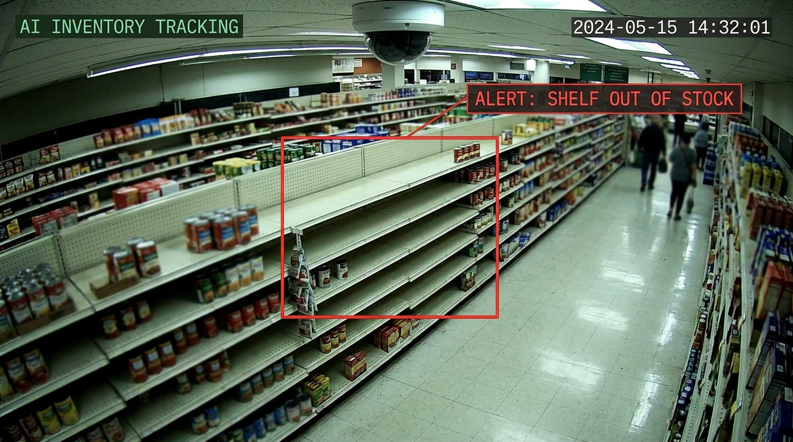
الرفوف الفارغة ونفاد المخزون (Out of Stock)
جديد 🔥
تنبيه عمال التعبئة فور خلو الرفوف من السلع لسرعة إعادة التموين بالمتجر.